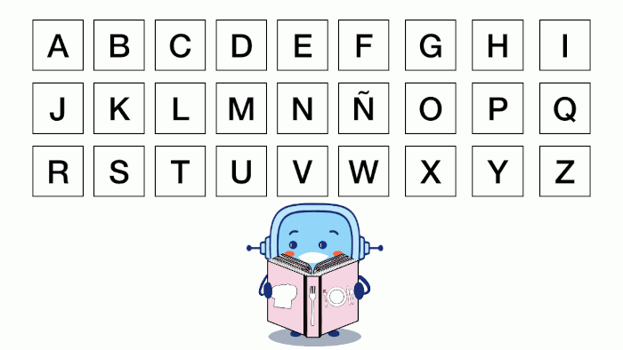

Piensa recetas que te gusten, intenta que sean saludables.
Propón tus recetas al resto del grupo. ¡Todas valen!
Finalmente, señalad las que creéis que son más saludables.
Elegid cada persona del equipo una de las recetas que habéis seleccionado como saludables. Es importante que conozcáis cómo se hace ese plato, si no, podéis investigarlo.
Cada persona del equipo escribe la receta en una plantilla como esta. Podéis añadir imágenes de los ingredientes, los pasos de elaboración o el resultado final.
Cuando lo hayáis hecho, intercambiad la receta con otra persona del equipo para valorarlas. Podéis utilizar esta lista.
Mejorad después la receta con las aportaciones de los compañeros y compañeras.
Tercero
Enseñad a vuestra maestra o maestro lo que habéis hecho para que lo revise y después, haced la receta corregida en una nueva plantilla.
Cuarto
En asamblea, ordenad las recetas según sean desayuno, comida o cena. También podéis hacerlo por orden alfabético.

Quinto
En grupo, vais a hacer la portada del recetario.
¿Recordáis cómo se hacía una portada? En grupo haced una para vuestro recetario. Para hacerla usad la técnica de lápices al centro contando lo que haríais antes de crearla.
Es importante que todas las personas del equipo participen. Para eso, podéis ayudaros de una plantilla como esta. Cada persona del equipo puede hacer su propia versión. Después, podéis recortar las partes y pegarlas mezclando vuestras propuestas en una nueva plantilla.
Sexto
Es el momento de elegir la portada para el recetario de vuestra clase. Para ayudaros a decidir cuál va a ser, podéis utilizar una lista como esta:
Séptimo
En asamblea, elaborad la contraportada. Podéis hacerla con la técnica “folio giratorio”. Es el momento de explicar brevemente algunos detalles sobre las recetas que contiene el recetario.
Tenéis que escribir de forma breve algunos detalles sobre las recetas del recetario.
Octavo
Ahora tenéis que unir la portada, las recetas y la contraportada.
¡Ya tenéis vuestro recetario!
Definición:
Examinar algo con cuidado y atención.
Ejemplo:
Es importante revisar el trabajo antes de entregarlo.
Definición:
Añadir, dar, contribuir.
Ejemplo:
Su grupo realizó aportaciones muy interesantes sobre el cambio climático.
Definición:
Acción de reconocer o darse cuenta del trabajo o esfuerzo de una persona
Ejemplo:
El maestro valora el esfuerzo del equipo.
Definición:
Cambiar mensajes, objetos... con dos o más personas.
Ejemplo:
Los niños intercambiaron los cromos repetidos.
Definición:
Recomendar o presentar una tarea.
Ejemplo:
Te propongo que escribas una carta.
Audio
Clavis dice Revisa y ordena
¿Te has fijado que para ordenar las recetas por momento del día has tenido que pensar antes cuando las comerías? Y si hubieras tenido que ordenarlas alfabéticamente, ¿hubieras pensado en las recetas de la misma forma o hubieras pensado en el abecedario para hacerlo?
Es importante pensar en la forma más adecuada de hacer lo que la actividad nos pide.
2. ¿Qué he aprendido?
En este último paso te voy a proponer que pienses en qué ha sido lo más importante de todo lo que has aprendido para conseguir el reto que te proponíamos.
Lo que descubras pensando en ello te servirá para cuando tengas que alcanzar retos parecidos en un futuro.
¡Para un momento y completa el PASO 4 de tu Diario de aprendizaje (¿Qué he aprendido?)!
Recuerda:
Pregunta a tu maestra o maestro si la rellenarás en papel o en el ordenador.
Si la rellenas en el ordenador, ¡no te olvides de guardarla en tu ordenador cuando la termines!